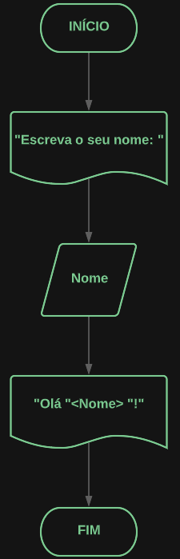

FUNDAMENTOS PARA APRENDER A PROGRAMAR
Conhecimentos matemáticos
Importância dos conhencimentos matemáticos
Quando se fala em aprender programação, uma das principais habilidades que devem ser desenvolvidas é a resolução de problemas, pois é a partir dela que o programador consegue analisar uma situação que necessita de uma solução digital e, a partir das exigências do problema, desenvolver um software de qualidade.
A principal relação que a programação e a matemática estabelecem é de natureza lógica e exata. Para resolver um algoritmo na programação, o programador tem acesso a uma quantidade definida de dados e a partir da escrita de um código, assim como uma operação matemática, ele deve chegar ao resultado esperado.
Alguns materias para se interar no assunto
Esses sites abordam de formas bem práticas, por meio de vídeos e textos, o valor de se ter uma boa relação com a matemática quando se deseja entrar no meio da programação, além de trazer um grau de familiaridade para se perder o medo da matemática.
Conhecimentos sobre algoritmos e lógica de programação
Importância dos algoritmos e lógica de programação
O que é exatamente lógica da programação? Lógica é a técnica utilizada para desenvolver instruções em uma sequência para atingir determinado objetivo. É a organização e planejamento de instruções, em um algoritmo, com o objetivo de tornar viável a implementação de um programa ou software.
Sendo assim, ter um bom entendimento sobre lógica de programação é fundamental para que o programador consiga exercer sua função, pois é a partir dela que o programador consegue analisar uma situação que necessita de uma solução, independente da tecnologia utilizada para o desenvolvimento, e reflete no seu entendimento do fluxo do código.
Código simples para impressão de nome
O código abaixo recebe como entrada o nome do usuário e imprime uma simples mensagem de boas vindas.
int main(){
int Num1;
int Num2;
cout << "Lendo o primeiro número...: " ;
cin>> Num1;
cout << endl;
cout << "Lendo o segundo número....: " ;
cin>> Num2;
cout << endl;
return 0; }
Pseudo-código simples para impressão de mensagem
O pseudo-código é uma interpretação do código de forma menos estruturada e mais legível, facilitando a identificação de erros do funcionamento do programa.
var Nome: caractere
inicio
escreva ("Escreva o seu nome:")
leia(nome)
escreva ("Olá ", Nome, !!!")
fimalgoritmo
Fluxograma do código
O fluxograma é uma representação mais visual do código de modo com que cada uma das formas tenha um significado, se é leitura de dados, armazenamento de dados ou processo de inicalização do código, é muito utilizado para descrever lógicas e fluxos no geral, não sendo uma ferramenta exclusíva da programação.
